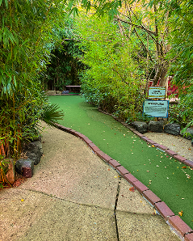
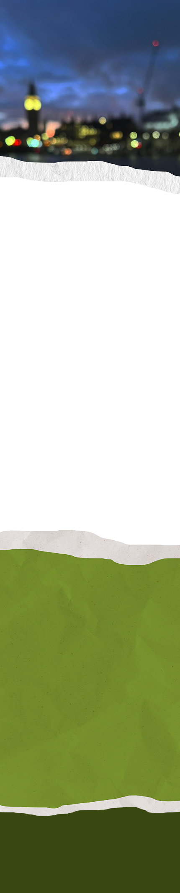
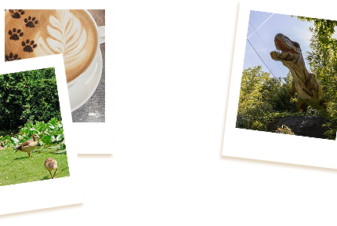

London can be overwhelming - the constant noise, the crowds, the rush. Sometimes you just need to press pause and find a moment of peace without leaving the city behind.
That's where we come in. We've curated a collection of hidden animal sanctuaries, urban farms, and wildlife havens tucked away across London—places most tourists never find. These aren't your typical zoo visits. They're quiet corners where you can actually connect with animals, breathe deeply, and feel like you've been transported somewhere completely different.
Whether you're looking to spend an afternoon with rescue alpacas, meet friendly goats on a city farm, or simply watch ducks glide across a peaceful pond, these spots offer something rare: a chance to slow down, recharge, and remember what it feels like to just be.
No long journeys. No fighting through crowds. Just you, the animals, and a little slice of calm in the heart of London.